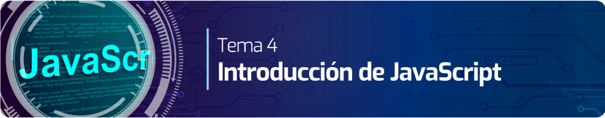

En este sitio Web seran desarrollados los siguientes Laboratorios dentro de la iniciativa del Ministerio de las TICS que busca brindar herramientas en productivas en el area de desarrollo de Software. A continuacion de se relacionaran los Laboratorios que se encuentran dentro de este sitio Web.